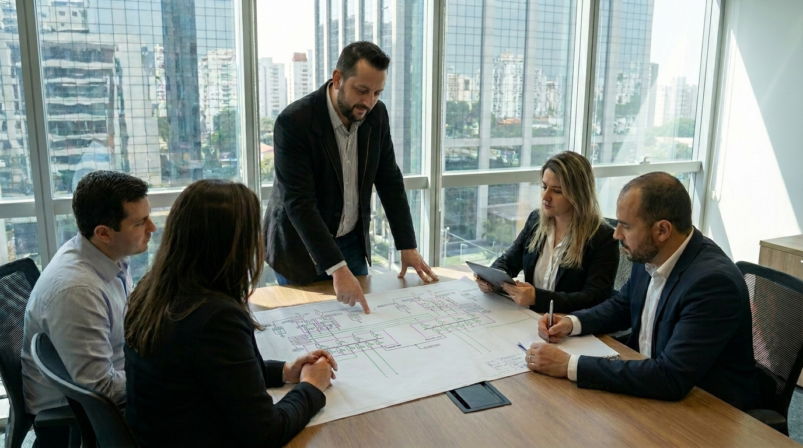

A SISPER atua de forma independente na avaliação da manutenção, no desenvolvimento de projetos, na análise de conformidade e na inspeção de sistemas elétricos e grupos geradores.
Com experiência de mais de 25 anos, ajudamos empresas e condomínios a antecipar riscos, validar intervenções e proteger a continuidade de operações críticas.

Empresas e condomínios contratam serviços de manutenção preventiva para manter grupos geradores e sistemas de energia de emergência disponíveis quando necessários.
A SISPER audita tecnicamente os serviços executados, verifica o cumprimento do contrato e identifica falhas, pendências e intervenções sem justificativa técnica antes que se tornem riscos operacionais ou custos desnecessários.
“A auditoria independente confirma se a manutenção preventiva do grupo gerador está sendo executada conforme as necessidades da instalação, as recomendações técnicas e as obrigações contratuais.”
A consultoria é conduzida em quatro etapas estruturadas para avaliar sistemas críticos, identificar falhas, orientar decisões e reduzir riscos operacionais e financeiros.
Avaliação detalhada da infraestrutura, das condições dos equipamentos e do histórico de manutenção. Identificamos pontos críticos, falhas recorrentes e possíveis desvios na execução dos serviços terceirizados.
Presença técnica especializada nas manutenções críticas para auditar testes, procedimentos e evidências de execução, verificando a conformidade dos serviços e a integridade dos equipamentos.
Mapeamento preventivo de anomalias em sistemas elétricos, comandos e combustível do grupo gerador, identificando riscos antes que evoluam para falhas críticas.
Emissão de relatórios técnicos independentes, com diagnóstico, evidências e recomendações prioritárias para apoiar decisões seguras de alto impacto operacional, técnico e financeiro.
Soluções técnicas para projetos de grupos geradores, adequação à NR-20 e inspeções elétricas com termografia. Atuação preventiva para reduzir riscos, assegurar conformidade e manter sua operação confiável.
Desenvolvimento de projetos mecânicos, hidráulicos e elétricos sob medida para a instalação de grupos geradores de emergência. Dimensionamento preciso para assegurar a potência necessária, evitando excessos, subdimensionamentos e improvisos técnicos.
Conheça o escopo do projetoAvaliação técnica de instalações para armazenamento de óleo diesel em edificações. Emissão de laudo de conformidade, identificação dos riscos associados aos tanques e orientação para as adequações necessárias ao atendimento da NR-20.
Solicite uma avaliação técnicaInspeções térmicas por infravermelho em painéis elétricos energizados, com identificação de aquecimentos anômalos, sobrecargas e conexões frouxas. Uma ação preventiva conforme a NR-10, que reduz riscos de falhas, paradas operacionais e incêndios elétricos.
Agende uma inspeção técnicaNão vendemos peças nem executamos manutenção corretiva. Nossa atuação é exclusivamente técnica e imparcial, focada em identificar riscos, melhorar a confiabilidade dos sistemas e orientar a melhor decisão para o seu investimento.
Mais de 25 anos de experiência prática em sistemas elétricos, grupos geradores e contingências de energia em ambientes corporativos, comerciais e industriais de alta complexidade.
Atuamos com engenharia elétrica, mecânica e hidráulica aplicada a projetos de grupos geradores, inspeções termográficas e laudos de conformidade com as normas NR-10 e NR-20.
Identificamos anomalias térmicas, elétricas e mecânicas antes que evoluam para falhas operacionais, interrupções de energia, danos a equipamentos ou incêndios elétricos.
Transformamos informações complexas em relatórios técnicos claros, com evidências, classificação de criticidade e recomendações práticas para gestores, equipes de manutenção e responsáveis técnicos.
Realizamos análises técnicas e equalização de propostas para apoiar a contratação, substituição ou adequação de equipamentos, evitando custos desnecessários, subdimensionamento e investimentos inadequados.
Atuamos com consultoria em infraestrutura elétrica crítica, projetos de grupos geradores, inspeção termográfica e laudos de conformidade para empresas onde uma interrupção de energia pode gerar perdas financeiras, paralisações operacionais, riscos à segurança e impactos à vida.
Proteção da continuidade operacional de elevadores, sistemas de pressurização de escadas, iluminação de emergência, bombas e cargas essenciais em edifícios corporativos de alto fluxo.
Confiabilidade para operações hospitalares em que uma falha no fornecimento de energia ou nos grupos geradores pode comprometer UTIs, centros cirúrgicos, equipamentos médicos e a segurança de pacientes.
Avaliação da infraestrutura elétrica crítica, grupos geradores e sistemas de climatização para reduzir riscos de indisponibilidade, superaquecimento, perda de dados e interrupção de serviços digitais.
Prevenção de paradas não programadas em linhas de produção, processos contínuos e equipamentos industriais. Identificamos riscos que podem causar perdas produtivas, danos a ativos e prejuízos operacionais.
Confiabilidade elétrica para centros de distribuição, armazenagem refrigerada, automação e operações de expedição. Reduza o risco de perdas de produtos, atrasos e interrupções na cadeia de suprimentos.
Segurança e continuidade para sistemas de telecomunicação, climatização, elevadores, iluminação, redes de TI e demais cargas essenciais de grandes edifícios empresariais.
A SISPER realiza avaliações técnicas independentes, inspeção termográfica, projetos de grupos geradores e laudos de conformidade para identificar falhas, reduzir riscos de interrupção e apoiar decisões seguras de investimento e manutenção.